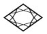
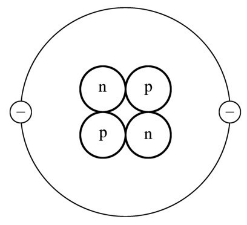
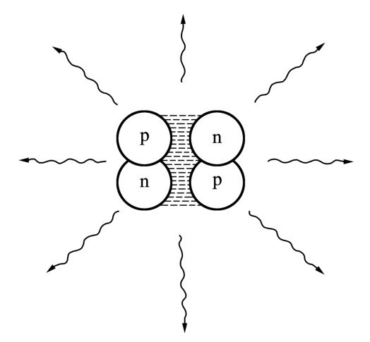
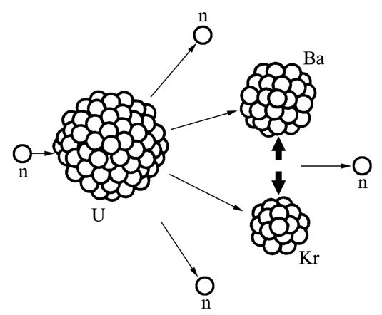

第十六章当我们安坐在篝火前感受着它的温暖时，太阳接近了西方地平线，它的光芒几乎耗尽了。
牛顿 （带着一点嘲讽的口吻）：我认为我们得感谢你，我亲爱的爱因斯坦，原因是这堆篝火给我们带来了温暖。它所发出的电磁辐射起源于我们放进去的木头质量的一小部分转化成了能量。
爱因斯坦 （同样嘲讽地）：牛顿，我不那样看。我们的篝火的最重要成分是可得到的易燃物质。没有我们设法搜集到的干柴，就不会有篝火。你不能用石头喂篝火吧，尽管石头具有充足的质量。
不过我的质能关系只论及质量本身，也就是说，它只涉及有关情形的一个方面，而且偏偏又是次要的一面。我们能否最终把质量转化成能量还依赖于物质的其他性质，可是你绝不能为此谴责我的方程。
牛顿： 我绝不敢！我仍旧被你的质能方程为我打开的新视野搞得神魂颠倒，而我只不过正在探索其全景。
哈勒尔： 先生们，我们应该继续讨论。木头在我们这儿的篝火里燃烧时一部分质量转化成了辐射能，这个说法没有什么错；不过那于事无补。该效应实际上很小，我们可以有把握地把它忽略掉。没错，篝火残留的灰烬比燃烧掉的物质轻，但其差值只是最初质量的百亿分之一。如今化学家所能测定我们涉及的质量的精度是在千万分之一的量级。换句话说，要想达到相对论所预言的质量亏损的敏感度，就得把上述精度提高1000倍。当化学家不仅讲能量守恒而且讲质量守恒的时候，他们基本上是正确的。
只要一个特定质量的相当可观的一部分转化成了能量，就会涉及一些在核物理学或粒子物理学领域的反应，比如在我们先前的例子中氘的产生。
牛顿： 那会使我猜测，太阳的能量产生是由于核反应造成的。
哈勒尔： 对组成太阳和恒星的物质的研究表明，它包含大量的惰性气体氦。大约宇宙物质的1/4就完全是氦。一个氦原子含有两个处在外壳层上的电子，以及一个由两个质子和两个中子组成的原子核。这个原子核叫做阿尔法粒子，用希腊字母α标记。
如果我们更密切注意这个原子核，事情就变得有意思了；像爱因斯坦的方程所启发的那样，我们用能量单位表达α粒子的质量并得到
m α =3727.5MeV.

图16.1 一个氦原子的示意图：两个电子组成的壳层围绕着它的核，后者含有两个质子和两个中子。图中原子核的尺寸被极大地放大了。
牛顿： 多么奇特的原子核啊！我刚刚把它的质量同它的组分粒子的质量之和，换句话说，两个质子质量加上两个中子质量做了比较。那些质量总共等于3755.8MeV，比α粒子的质量大出28.3MeV。这一差值意味着相当显著的能量或质量，它几乎占了α粒子全部质量的0.8％。而且这份能量在两个中子和两个质子结合形成一个α粒子的时候会释放出来。然而，氘核的结合能只有2.2MeV，只占氘核质量的0.1％。
爱因斯坦： 那准意味着氦核是一个相当稳定的结构，它的4个组分粒子紧紧地束缚在一起。
哈勒尔： 氦核的这一特性是由核力的特殊性质造成的，对此我们眼下还不能深究。可以认为α粒子是由两个氘核组成的束缚体系。把这两个氘核束缚在一起造成的质量亏损是23.9MeV，比牛顿提到的28.3MeV稍微小点。
牛顿： 所以我一旦把两个氘核束缚在一起，就释放出23.9MeV的能量。在构成一个α粒子的同时获得了显著数量的能量，那确实是条有趣的途径。你在早些时候告诉我们说地球上并不缺少氘核，原因是海洋含有大量的重氢。因此我们可以依照配方行事：取两个氘核，把它们放入一个罐子搅拌，然后你瞧，一个氦核加上好多辐射能就出来了！
哈勒尔： 乍看起来，你是对的。两个氘核的结合也称做两个氘核的聚变，它释放出来的能量是一个质子和一个中子的聚变所释放的能量的10倍。如果我们要通过使氘核聚变来生产1千克的氦，那么我们将会得到2亿千瓦时的能量——相当可观的数量啊！

图16.2 当氘核聚变生成一个氦核（也叫做α粒子）的时候，释放了大约24MeV的能量。它将以光子的形式辐射出来。
办法也许听起来简单，但其实不然。问题在于氘核像质子一样带有正电荷，这意味着两个氘核将会发生电性相互排斥。要想把它们熔化成一个α粒子，我们必须克服这种排斥，使氘核相互接近到核力最终占上风的程度。
爱因斯坦： 那在什么距离才会发生？
哈勒尔： 在大约10-12 厘米的距离，也就是说，约为原子直径的万分之一。
爱因斯坦： 好，祝你好运！当我们对射两个氘核时，它们彼此接近得那么紧密的概率一定极其微小，而且如果我们不得不克服两个粒子之间的电性排斥的话，概率就更小了。
哈勒尔： 问题就在这儿。通过对射氘核来偶尔获得聚变是容易做到的，但是粒子的能量必须足够高以克服排斥。实际上，只有很少量的氘核参与了聚变过程；大多数氘核只是彼此擦肩而过。这些过程已经被仔细研究过了，结果是把粒子加速到足以开始聚变所需的能量远大于偶然发生的聚变所能产生的能量。换句话说，在能量方面没有得到任何净利；能量其实损失了。
爱因斯坦： 我一开始就是这么想的，但是我刚才有了另外一个想法。假设我们把氘加热。加热物体只不过意味着它的组分原子或分子的动能增加了。在某一温度，也许是很高的温度，少数氘核在它们频繁碰撞期间将会克服电性排斥并聚合在一起；在更高的温度，很多氘核会有这样的行为。换句话说，如果氘足够热，聚变将会自动开始；称为核燃烧的反应将开始。要是有足够的氘的话，这种过程甚至会导致爆炸。
牛顿： 该过程是造成太阳内部能量产生的原因吗？
哈勒尔： 请不要着急！爱因斯坦的想法无疑是对的。核聚变在某一温度会自动开始，但不幸的是该温度与地球表面的一般温度相比非常之高。为了克服氘核之间的电性排斥，有关粒子必须具备几个MeV的能量。然而，要获得平均氘核能量在几个MeV范围之内，将要求温度处于1010 度的量级，即100亿度的量级。而如此高温是我们无法想象的。
当然了，为了启动聚变过程，并非所有的氘核都得具备必需的能量。即使在低得多的温度，少数氘核也会拥有足够的能量。大约108 度的温度，即1亿度，将足以引发聚变。
牛顿： 我不是很清楚，把诸如重氢这样的物质加热到100万度的温度意味着什么。原子在这么高的温度会怎样呢？
哈勒尔： 答案很简单，原子本身不再存在了。在加热氘的时候，碰撞原子的能量一超过10eV的量级，电子就会被逐出它们的壳层。把一个电子移离一个原子所需要的能量大约处在这个量级。举个例子，该能量对于普通的氢而言等于13.6eV。
所以你们可以看到，在100万度以上的温度将不再存在重氢原子。相反，我们得到的是极热的氘核与电子的混合物，称做等离子体（plasma）。如果我们以这种方式制造等离子体并把它加热到稍低于1亿度的温度，聚变就会启动。热核燃烧也将开始。
牛顿： 好。那么回到太阳的话题。从你到目前为止所说过的话，我猜测太阳是通过重氢的热核燃烧来产生能量的。
哈勒尔： 你的说法基本上是对的。太阳内部的温度高得足以使聚变发生，因而很大一部分质量依照爱因斯坦的E=mc 2 转化为辐射能。能量是通过氦合成获得的。但是我们所分析的过程——经由两个氘核聚变而合成氦核——只占太阳产生的能量的一小部分。太阳能的主要部分来自一个更复杂的过程，它分几个阶段发生并涉及从质子——正常氢原子的原子核——到氦核的合成。
爱因斯坦： 一个氦核包含两个氘核。如果氦产生于正常的氢原子（其原子核由单个质子组成），那么那些中子从何而来？
哈勒尔： 就像我说过的那样，反应分几个阶段进行，在此期间质子转化成中子。我们现在知道质子和中子是紧密相关的，而且一个质子可以转化为一个中子。其他粒子，特别是电子和中微子，会在这一过程中起作用。但是我们不需要在这里逐一细说。要点在于：即使是正常的氢原子，在适当的时候也能转化为氦。
牛顿： 我认为，估算太阳在一段时间内，比如说1秒钟，辐射了多少能量并不是特别困难。我们从这个量出发可以计算太阳每秒钟损失了多少质量。
哈勒尔： 那很容易做到。如果我记得没错的话，太阳的能量输出功率近似为3.7×1023 千瓦，其中仅仅一小部分以电磁辐射的形式到达我们这颗行星。其数量约等于1014 千瓦，大约比地球上所有发电厂产生的能量多出10万倍来。我们可以利用爱因斯坦方程从太阳每秒钟的能量损失计算它每秒钟的质量损失值：400万吨。
牛顿： 真不少。考虑到太阳几十亿年来持续损失质量，人人都想知道它还能继续存活多长时间。
哈勒尔： 别担心。太阳可以忍受质量损失再存活几十亿年，这没有任何问题。然而，有一点是清楚的：太阳和恒星发光只是由于它们能够把质量转化成辐射，而且能量平衡是由爱因斯坦的方程来支配的。如果太阳质量没有通过氢的热核燃烧发生辐射的话，那么就没有来自太阳的能量，因而地球上就不会有生命。
牛顿： 所以说，没有相对论效应，宇宙中就不可能有生命。那样的话，宇宙中除了冰冷的物质以外一无所有。
爱因斯坦： 我亲爱的牛顿，你言过其实了。正如哈勒尔先前指出的那样，我的方程决定的只是能量平衡。核聚变的可能性并非我的方程的结果，而是核力的特殊性质的结果。这与银行的运作方式类似：我的方程保证收支结存是对的，以及会计部门不出错。至于钱是从哪儿来的是另外一个问题，一个更困难的问题。
牛顿： 我们还是回到地球上来。原则上，太阳所能做的事应该可以被人在地球上模仿。有可能在地球上获得核聚变吗？
哈勒尔： 你随后会明白，为什么你的问题无法用简单的是或否来回答。我建议我们首先讨论另一类依靠核过程的能量产生——原子核的裂变 。这里能量平衡又是由爱因斯坦的方程来保证的。
爱因斯坦： 我同意，可是不管我们如何去做，我都不明白我们怎么能够通过分裂原子核获得能量。我们不是刚刚了解到，可以把两个氘核结合在一起使得它们形成一个氦核——称做聚变的过程，从而产生许多能量吗？当然了，我可以把该过程颠倒过来，把氦核分裂成两个氘核，但是那将消耗掉我相当多的能量而不会导致能量净利。
哈勒尔： 如果你试图分裂的是氦，那你说得没错。氦核的组分粒子具有很高的结合能。但结合能是与所考虑的原子核的结构相关的。它依赖于原子核中质子和中子的数目。
牛顿： 你是在说，对于比氦重的原子核，每个核子的结合能甚至更大？
哈勒尔： 是的，它可以更大。人们发现铁原子核的结合能最大。铁原子的原子核是最稳定的原子核，这就是地球上之所以有这么多铁的原因。
爱因斯坦： 那么我猜想，比铁原子核重的原子核，比如铅或金的原子核，就不如铁原子核稳定。
哈勒尔： 没错，而且这一现象容易解释。我们知道很重的原子核包含很多质子。比方说，金原子核就有79个质子，而它们都携带正电荷，因此相互排斥。如果我们突然切断核力，原子核将会爆炸。质子都会以极高的速度飞出来。
我们不能随意增加一个原子核的质子数目。当原子核的尺寸增大时，质子之间的电性排斥就变得越来越重要，而且最终它将导致原子核的不稳定。一旦有来自外部的最轻微的干扰，原子核就将分崩离析。比如说，它也许分裂为两个原子核。
爱因斯坦： 我明白了。所以我们可以预期，一个超过某种尺寸的原子核易于一分为二；在此过程中，只不过由于每一半含有较初始原子核为少的质子，能量将会释放出来。而这意味着分裂出来的原子核束缚得更紧些。
牛顿： 存在可以自发地一分为二的原子核吗？
哈勒尔： 最著名的当属铀原子核。它具有92个质子，而且通常——但不总是——含有146个中子。铀核会很偶然地自发分裂，产生较轻的原子核，后者含有较少的但束缚得更紧的质子。作为一个具体例子，一个铀核可以分裂成一个含有56个质子的钡核和一个含有36个质子的氪核。
虽然在一个铀核中裂变很少自发地发生，但是它可以轻易地从外部通过稍许帮助来诱发。倘若你把一个中子射向一个铀核，将能量给予该原子核并使之加热，那么它会像一个大肥皂泡那样开始振动并最终爆裂。中子撞击的能量甚至不必很大，铀核只需要一点震动就会分裂。与肥皂泡相类比有助于很好地说明问题。肥皂泡越大，分裂成小肥皂泡的趋势就越大，只要它不立即爆炸。

图16.3 在左面，一个中子与一个铀核相撞，后者含有92个质子和（通常情况下）146个中子。入射的中子将自身的能量传给铀核，从而激发了整个系统，使之像一个肥皂泡那样振动，最后分裂成两个较小的原子核和几个中子。这里显示的是铀核分裂成一个含有56个质子的钡核，一个含有36个质子的氪核，以及几个中子。
爱因斯坦： 如果一个铀核分裂了，会释放出多少能量？
哈勒尔： 大约200MeV。但是依照你的方程，此能量必须与冻结在重铀核中的能量相比较来考虑：与后者相比，只有0.1％的铀核质量转化成了能量。
牛顿： 就质量转化为能量而言，这个裂变过程似乎比氘核聚变成氦的效率低得多，后者几乎有1％的质量转变成了能量。
哈勒尔： 然而，即使利用裂变也可以把相当大一部分质量转化为能量，至少和我们这儿的篝火相比是这样。然而，核裂变与氦核的聚变相比，产生的电磁辐射较少。在裂变中产生的大部分能量转变成两个随之产生的原子核的动能：它们以极高的速度竞相跑开。
而且一定别忘了，裂变带给我们的不仅是两个较小的原子核；许多中子也发射出来了。
牛顿： 但是为什么在残留物中存在的自由中子会这么重要？
哈勒尔： 这对裂变本身并不重要；在没有任何残留中子的情况下，裂变也很容易发生。可是，如果我们想要启动大规模的核裂变，我们就不能只考虑单个原子核，而是得在短时间内分裂大量原子核。而那是无法从外部安排的，裂变过程本身得给予某些帮助。
牛顿： 哈，我明白了。剩余的中子在铀物质周围飞来飞去，接着又诱发更多的裂变过程。
哈勒尔： 对。这可以导致链式反应，和我们在我生起这堆火时所观察到的链式反应并无不同。首先，我点着一小片纸，然后火焰吞噬一些干树叶和少许细枝，最后整堆木头都烧着了。
顺便说一下，并非只在铀物质中可以启动核链式反应。核链式反应也可以在其他元素中发生，比如说钚就可以，它的原子核里面有94个质子。
爱因斯坦： 当一个链式反应开始时，它似乎要导致一种核物质的燃烧。我可以想象，这些反应加速并增强，演化成一个真正的核爆炸。
哈勒尔： 首先，你需要足够多的裂变物质，使得所产生出来的中子绝大部分能启动新的裂变过程。我们采用“临界质量”（critical mass）这个术语。铀同位素铀235的临界质量大约等于50千克。这种同位素是铀的一个特殊类型，其原子核中总共包含235个核子——除了92个质子之外，还有143个中子。
爱因斯坦： 那样一块铀物质有多大？
哈勒尔： 它会是一个直径17厘米的铀原子球，差不多一个足球那么大。
爱因斯坦： 那是否意味着，如果我这儿有一个铀原子球，它会立即爆炸，把它的质量的0.1％或50克转化成能量？
哈勒尔： 是的，情况就是这样。剧烈的爆炸将会发生。原子弹就是这样制造的。你们已经听说过那种武器不可思议的破坏力。幸好我们这儿没有一块铀物质。
之前牛顿突然起立，在我们的营火前面走来走去。此刻他停下来说话了。
牛顿： 我早对此有所察觉。你一暗示说有可能把爱因斯坦公式所描述的冻结在物质中的能量释放出一小部分来，我就想到了。原来核武器就是那样运作的。
哈勒尔： 对，1945年在第二次世界大战即将结束时，投到日本的那些核武器就是这种类型的。人们通常不太准确地把它们称做原子武器。大约1940年，当我们今晚所讨论的事情在科学界不再是秘密的时候，一群美国物理学家——包括你，爱因斯坦——担心纳粹德国的科学家或许具备了发展核炸弹的能力。当时那场正在蹂躏欧洲的战争还看不到尽头。美国物理学家求助于罗斯福总统（President Franklin Roosevelt），而他和海陆空三军最高指挥部一起启动了一个建造核武器的特殊计划。那是个相当长的故事，但是我想做较详细的讲述。
爱因斯坦 （皱着眉头）：我希望你讲讲，而且请不要遗漏任何事情。
哈勒尔： 去年我在新墨西哥州的洛斯阿拉莫斯度过了几个星期。那就是制造第一枚核弹的地方。我在那儿的时候，认识了一位曾经积极参与过代号“曼哈顿工程”的物理学家。有一天我和他一起在洛斯阿拉莫斯野外穿过峡谷乡村进行远足，他告诉了我当时所发生的事件的许多细节。我要试图告诉你们的是他所讲的故事的一个缩短的版本。